Variavel Classe
id id numeric
data_inversa data_inversa POSIXct
horario horario POSIXct
horario_formatado horario_formatado character
hora hora integer
periodo periodo ordered
fase_dia fase_dia character
mes mes ordered
dia_semana dia_semana ordered
uf uf character
br br character
km km numeric
municipio municipio character
tipo_acidente tipo_acidente character
condicao_metereologica condicao_metereologica character
tipo_pista tipo_pista character
pessoas pessoas numeric
mortos mortos numeric
feridos_leves feridos_leves numeric
feridos_graves feridos_graves numeric
ilesos ilesos numeric
feridos feridos numeric
veiculos veiculos numeric
latitude latitude numeric
longitude longitude numericAnálise de Acidentes Rodoviários em Minas Gerais
1 Introdução
O presente relatório tem como objetivo realizar uma análise descritiva da base de dados de acidentes rodoviários registrados em Minas Gerais no ano de 2020. A análise busca identificar padrões, distribuições e possíveis associações relacionadas aos acidentes, considerando variáveis temporais, espaciais e características dos registros.
Inicialmente, foi realizada uma etapa de tratamento e organização dos dados, envolvendo verificação de inconsistências, padronização das variáveis e criação de novas variáveis auxiliares para facilitar as análises posteriores. Em seguida, foram desenvolvidas análises exploratórias univariadas e bivariadas, utilizando medidas descritivas, tabelas de frequência e representações gráficas.
Além disso, o projeto busca explorar relações entre fatores como período do dia, tipo de acidente, condições meteorológicas e características das rodovias, visando obter uma compreensão mais detalhada do comportamento dos acidentes registrados no estado.
2 Base de dados
2.1 Estrutura da base
A base de dados utilizada contém informações dos acidentes ocorridos nas rodovias federais de Minas Gerais no ano de 2020. Após o carregamento de dados, verificou-se a presença de 6536 observações e 21 variáveis, contendo informações dos acidentes, vítimas, características da rodovia e condições ambientais
2.2 Classificação de variáveis
As varíaveis da base foram separadas de acordo com sua característica estatística.
As variáveis qualitativas descrevem categorias e não podem ser medidas numericamente e geralmente são representadas por porcentagens ou contagens.
2.2.1 Ordinal
data_inversa
dia_semana
fase_dia
2.2.2 Nominal
município
tipo_acidente
condicao_metereologica
tipo_pista
uf
br
id
As variáveis quantitativas representam dados que podem ser medidos ou quantificados numericamente.
2.2.1 Contínuas
latitude
longitude
horario
km
2.2.2 Discretas
pessoas
feridos
feridos_leves
feridos_graves
veiculos
mortos
ilesos
3 Limpeza e tratamento de dados
3.1 Valores ausentes
Variavel Valores_Ausentes
id id 0
data_inversa data_inversa 0
horario horario 0
horario_formatado horario_formatado 0
hora hora 0
periodo periodo 0
fase_dia fase_dia 0
mes mes 0
dia_semana dia_semana 0
uf uf 0
br br 0
km km 4
municipio municipio 0
tipo_acidente tipo_acidente 0
condicao_metereologica condicao_metereologica 0
tipo_pista tipo_pista 0
pessoas pessoas 0
mortos mortos 0
feridos_leves feridos_leves 0
feridos_graves feridos_graves 0
ilesos ilesos 0
feridos feridos 0
veiculos veiculos 0
latitude latitude 0
longitude longitude 0Foi realizada a verificação de valores ausentes na base de dados utilizando funções de contagem de NA. Observou-se a presença de poucos valores ausentes na variável km. Após investigação, verificou-se que esses valores já estavam originalmente ausentes na base de dados, não sendo gerados durante o processo de transformação das variáveis.
3.2 Padronização das variáveis
A variável br foi modificada, removendo-se o sufixo .0 e adicionando-se o prefixo BR-, com o objetivo de melhorar a padronização textual.
A variável mes foi elaborada a partir de data_inversa, visando simplificar a criação de gráficos e análises temporais.
A variável horario_formatado foi criada porque a variável original horario continha inconsistências relacionadas ao formato entre data e hora, sendo extraída apenas a informação referente ao horário.
A variável hora originou-se da variável horario, com a finalidade de facilitar a legibilidade dos gráficos e análises, uma vez que a representação em valores inteiros torna a visualização mais simples.
A variável periodo foi derivada da variável hora com o objetivo de consolidar a variável fase_dia, pois esta apresentava categorias muito fragmentadas, o que dificultaria as análises temporais.
3.3 Variáveis temporais
Foram criadas variáveis temporais derivadas das já existentes no banco de dados, com a finalidade de melhorar a legibilidade e facilitar a interpretação dos dados ao longo do tempo.
3.4 Transformação de variáveis
A variável fase_dia não foi utilizada nas análises exploratórias, pois apresenta informações semelhantes à variável periodo, criada durante a etapa de tratamento dos dados.
A variável periodo foi construída a partir da variável hora, permitindo uma categorização mais padronizada dos horários dos acidentes em madrugada, manhã, tarde e noite.
Dessa forma, optou-se por utilizar apenas a variável periodo nas análises posteriores, evitando redundância nas interpretações.
Algumas variáveis passaram por transformações para adequação às análises estatísticas. Para melhorar a visualização dos gráficos bivariados envolvendo tipo de acidente, foram selecionados apenas os dez tipos de acidentes com maior frequência de ocorrência, reduzindo a poluição visual e facilitando a interpretação dos resultados.
3.5 Verificação de consistência
Também foi realizada uma verificação de consistência entre variáveis relacionadas. Observou-se que a variável feridos corresponde corretamente à soma entre feridos leves e feridos graves, indicando coerência interna nos registros da base.
4 Análise exploratória
A análise exploratória de dados tem como objetivo compreender o comportamento das variáveis, identificar padrões, valores extremos (outliers) e possíveis relações entre os dados.
Nesta etapa, foram realizadas análises univariadas e bivariadas, utilizando medidas estatísticas e gráficos para facilitar a interpretação dos acidentes registrados nas rodovias de Minas Gerais.
4.1 Análise univariada
A análise univariada busca estudar cada variável individualmente, permitindo observar sua distribuição, frequência e concentração dos valores.
Para as variáveis numéricas, foram utilizadas medidas descritivas, gráficos de barras e boxplots. Já para as variáveis categóricas, foram utilizadas tabelas de frequência e gráficos de barras.
4.1.1 Váriáveis numéricas
Pessoas
A variável pessoas representa a quantidade de indivíduos envolvidos em cada acidente registrado. Para compreender sua distribuição, foram utilizadas medidas descritivas e gráficos de distribuição.
| Medida | Valor |
|---|---|
| Mínimo | 1.00 |
| 1º Quartil | 1.00 |
| Mediana | 2.00 |
| Média | 2.23 |
| 3º Quartil | 3.00 |
| Máximo | 14.00 |
| Desvio Padrão | 1.45 |
| Variância | 2.09 |


Observa-se que a maior parte dos acidentes envolve entre uma e três pessoas, indicando concentração dos valores em faixas mais baixas. A mediana igual a 2 demonstra que metade dos acidentes possui até duas pessoas envolvidas, enquanto a outra metade apresenta valores superiores.
Além disso, o boxplot evidencia a presença de diversos valores extremos (outliers), indicando ocorrências menos frequentes com elevado número de pessoas envolvidas.
A proximidade entre média (2,23) e mediana (2) sugere que, apesar da presença de outliers, a distribuição não apresenta assimetria muito acentuada.
Feridos( leves/graves)
As variáveis feridos, feridos_leves e feridos_graves indicam a quantidade de pessoas atingidas nos acidentes e a gravidade dos ferimentos.
| Medida | Valor |
|---|---|
| Mínimo | 0.00 |
| 1º Quartil | 1.00 |
| Mediana | 1.00 |
| Média | 1.26 |
| 3º Quartil | 2.00 |
| Máximo | 13.00 |
| Desvio Padrão | 1.07 |
| Variância | 1.14 |


| Medida | Valor |
|---|---|
| Mínimo | 0.00 |
| 1º Quartil | 0.00 |
| Mediana | 1.00 |
| Média | 0.98 |
| 3º Quartil | 1.00 |
| Máximo | 11.00 |
| Desvio Padrão | 0.98 |
| Variância | 0.97 |
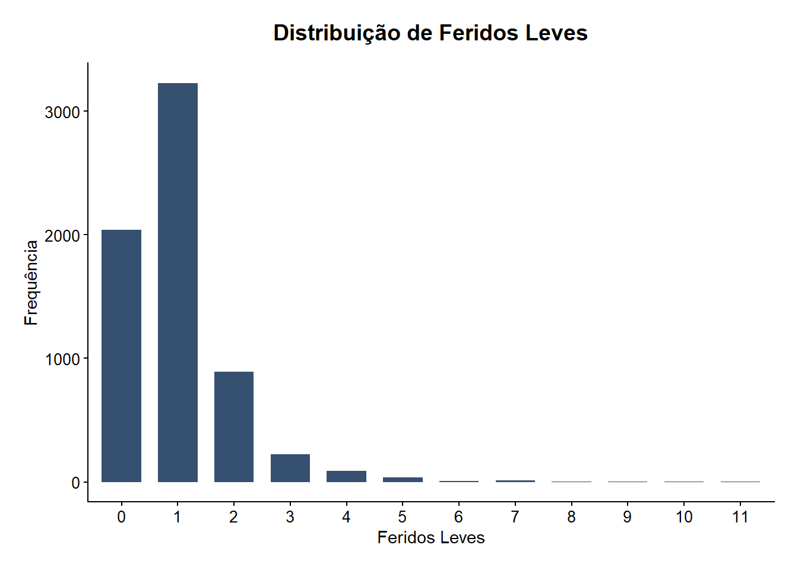
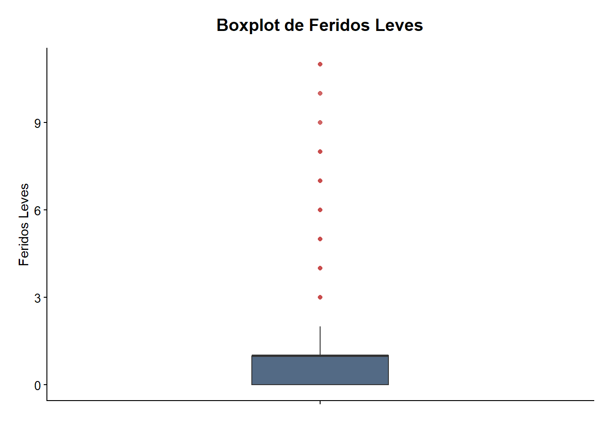
| Medida | Valor |
|---|---|
| Mínimo | 0.00 |
| 1º Quartil | 0.00 |
| Mediana | 0.00 |
| Média | 0.28 |
| 3º Quartil | 0.00 |
| Máximo | 8.00 |
| Desvio Padrão | 0.61 |
| Variância | 0.37 |
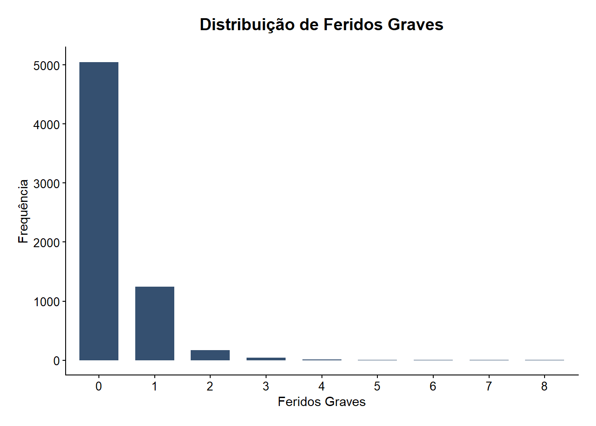
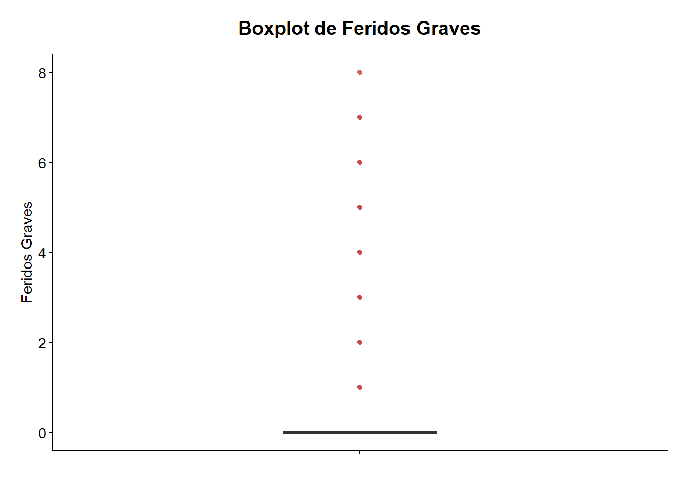
Em relação à variável feridos, nota-se que a quantidade de pessoas feridas nos acidentes se concentra principalmente entre zero e duas pessoas. A mediana igual a 1 indica que pelo menos metade dos acidentes apresenta até um ferido.
Com base no boxplot, é possível observar a presença de valores extremos (outliers), indicando poucos acidentes com quantidade elevada de feridos.
A variável feridos_leves apresenta concentração em valores baixos, principalmente entre zero e um ferido leve por acidente. Além disso, a proximidade entre média e mediana sugere distribuição relativamente concentrada nos valores centrais.
Já a variável feridos_graves apresenta forte concentração entre zero e um ferido grave, sendo o valor zero o mais frequente. Também é possível observar a presença de diversos valores extremos, indicando acidentes menos frequentes com maior número de feridos graves.
Mortos
A variável mortos indica a quantidade de vítimas fatais nos acidentes.
| Medida | Valor |
|---|---|
| Mínimo | 0.00 |
| 1º Quartil | 0.00 |
| Mediana | 0.00 |
| Média | 0.08 |
| 3º Quartil | 0.00 |
| Máximo | 12.00 |
| Desvio Padrão | 0.37 |
| Variância | 0.14 |


Ao analisar essa variável, percebe-se que a grande maioria dos acidentes não resultou em vítimas fatais. Entretanto, o boxplot evidencia a presença de valores extremos (outliers), indicando a ocorrência de acidentes mais graves, embora menos frequentes.
Ilesos
A variável ilesos representa a quantidade de pessoas envolvidas nos acidentes que não sofreram ferimentos.
| Medida | Valor |
|---|---|
| Mínimo | 0.00 |
| 1º Quartil | 0.00 |
| Mediana | 1.00 |
| Média | 0.89 |
| 3º Quartil | 1.00 |
| Máximo | 13.00 |
| Desvio Padrão | 1.08 |
| Variância | 1.17 |


Observa-se que, na maior parte dos acidentes, entre zero e uma pessoa saiu ilesa. Além disso, a proximidade entre média e mediana sugere distribuição relativamente simétrica dos dados.
Ao analisar o boxplot, percebe-se também a presença de diversos valores extremos (outliers), indicando acidentes com maior quantidade de pessoas ilesas.
Veículos
A variável veiculos representa a quantidade de veículos envolvidos em cada acidente.
| Medida | Valor |
|---|---|
| Mínimo | 1.00 |
| 1º Quartil | 1.00 |
| Mediana | 1.00 |
| Média | 1.55 |
| 3º Quartil | 2.00 |
| Máximo | 9.00 |
| Desvio Padrão | 0.73 |
| Variância | 0.53 |

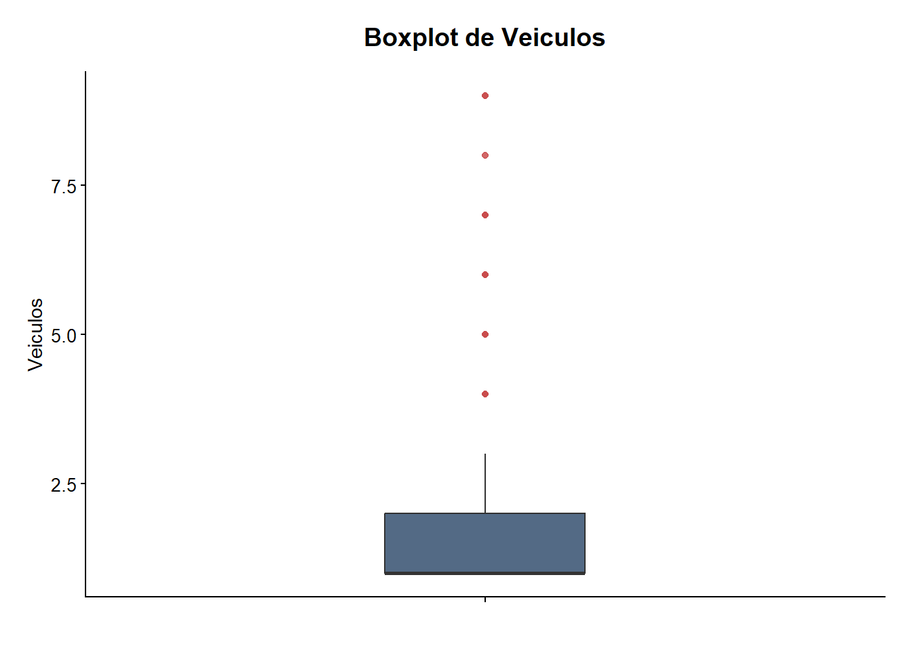
Ao observar os gráficos e os resumos estatísticos da variável, percebe-se que a maior parte dos acidentes envolveu entre um e dois veículos. A mediana igual a 1 indica que, em pelo menos metade dos acidentes registrados, apenas um veículo estava envolvido.
Além disso, o boxplot evidencia a presença de alguns valores extremos, indicando acidentes com quantidade significativamente maior de veículos envolvidos.
4.1.2 Variáveis categóricas
Condição metereológica
A variável condicao_meteorologica representa as condições climáticas no momento em que o acidente ocorreu.
| Condicao Metereologica | Frequência | Porcentagem (%) |
|---|---|---|
| Chuva | 1208 | 18.48 |
| Céu Claro | 3960 | 60.59 |
| Ignorado | 100 | 1.53 |
| Nevoeiro/Neblina | 43 | 0.66 |
| Nublado | 1225 | 18.74 |

Observa-se que a maior parte dos acidentes aconteceu em situações de céu claro, totalizando 3.960 ocorrências. Em seguida, destacam-se os acidentes ocorridos em condições de céu nublado, com 1.225 registros.
Por outro lado, condições como nevoeiro ou neblina apresentaram baixa frequência de acidentes, sendo as categorias com menor número de ocorrências na base analisada.
Tipo de pista
A variável tipo_pista indica a configuração da rodovia onde ocorreu o acidente.
| Tipo Pista | Frequência | Porcentagem (%) |
|---|---|---|
| Dupla | 2990 | 45.75 |
| Múltipla | 211 | 3.23 |
| Simples | 3335 | 51.03 |

Observa-se predominância de acidentes em pistas simples, correspondendo a aproximadamente 51% das ocorrências registradas. Esse resultado sugere maior concentração de acidentes em rodovias com esse tipo de configuração.
Já as pistas múltiplas apresentaram menor frequência de acidentes, totalizando apenas 211 ocorrências.
Período
A variável periodo representa o período do dia em que o acidente ocorreu.
analise_categorica(acidentes,"periodo" )| Periodo | Frequência | Porcentagem (%) |
|---|---|---|
| Madrugada | 572 | 8.75 |
| Manhã | 2000 | 30.60 |
| Tarde | 2218 | 33.94 |
| Noite | 1746 | 26.71 |
criar_barplot_numerico(acidentes,"periodo")
Observa-se que a maior parte dos acidentes aconteceu nos períodos da tarde e da manhã. O período da tarde concentrou 2.218 ocorrências, correspondendo a aproximadamente 33,9% dos acidentes, enquanto o período da manhã apresentou 2.000 registros, representando cerca de 30,6% das ocorrências.
Em contrapartida, a madrugada apresentou a menor quantidade de acidentes, com apenas 572 ocorrências, correspondendo a aproximadamente 8,75% do total.
Dia da semana
A variável dia_semana representa o dia da semana em que os acidentes ocorreram.
| Dia Semana | Frequência | Porcentagem (%) |
|---|---|---|
| segunda | 857 | 13.11 |
| terça | 794 | 12.15 |
| quarta | 825 | 12.62 |
| quinta | 846 | 12.94 |
| sexta | 1059 | 16.20 |
| sábado | 1102 | 16.86 |
| domingo | 1053 | 16.11 |

Observa-se maior concentração de acidentes nos finais de semana e na sexta-feira. O sábado apresentou o maior número de ocorrências, com 1.101 acidentes, correspondendo a aproximadamente 16,9% do total. Em seguida, destacam-se a sexta-feira e o domingo, com aproximadamente 16,2% e 16,1% das ocorrências, respectivamente.
Por outro lado, a terça-feira apresentou a menor frequência de acidentes, com 794 registros, correspondendo a cerca de 12,2% das ocorrências.
Tipo de acidente
A variável tipo_acidente representa a classificação do acidente registrado.
| Tipo Acidente | Frequência | Porcentagem (%) |
|---|---|---|
| Atropelamento de Animal | 125 | 1.91 |
| Atropelamento de Pedestre | 223 | 3.41 |
| Capotamento | 264 | 4.04 |
| Colisão frontal | 543 | 8.31 |
| Colisão lateral | 622 | 9.52 |
| Colisão transversal | 597 | 9.13 |
| Colisão traseira | 1066 | 16.31 |
| Engavetamento | 83 | 1.27 |
| Incêndio | 150 | 2.29 |
| Queda de ocupante de veículo | 312 | 4.77 |
| Saída de leito carroçável | 1682 | 25.73 |
| Tombamento | 869 | 13.30 |

Observa-se predominância de acidentes do tipo saída de leito carroçável, correspondendo a aproximadamente 25% das ocorrências, com 1.682 registros. Em seguida, destacam-se os acidentes do tipo colisão traseira, com 1.066 ocorrências, representando cerca de 16,3% do total.
Já os acidentes do tipo engavetamento apresentaram menor frequência, totalizando apenas 83 ocorrências na base analisada.
BR
A variável br representa a rodovia na qual o acidente ocorreu.
| Br | Frequência | Porcentagem (%) |
|---|---|---|
| BR-116 | 851 | 13.02 |
| BR-146 | 53 | 0.81 |
| BR-153 | 173 | 2.65 |
| BR-251 | 201 | 3.08 |
| BR-262 | 793 | 12.13 |
| BR-265 | 1 | 0.02 |
| BR-267 | 121 | 1.85 |
| BR-352 | 1 | 0.02 |
| BR-354 | 65 | 0.99 |
| BR-356 | 54 | 0.83 |
| BR-364 | 15 | 0.23 |
| BR-365 | 483 | 7.39 |
| BR-381 | 1948 | 29.80 |
| BR-40 | 1282 | 19.61 |
| BR-459 | 70 | 1.07 |
| BR-50 | 421 | 6.44 |
| BR-NA | 4 | 0.06 |

Observa-se que a maior parte dos acidentes ocorreu na BR-381, correspondendo a aproximadamene 30% das ocorrências, com 1948 registros. Já a BR-352 apresenta baixa ocorrência de acidentes, houve apenas uma.
Município
A variável município represenda a cidade onde ocorreu o acidente.
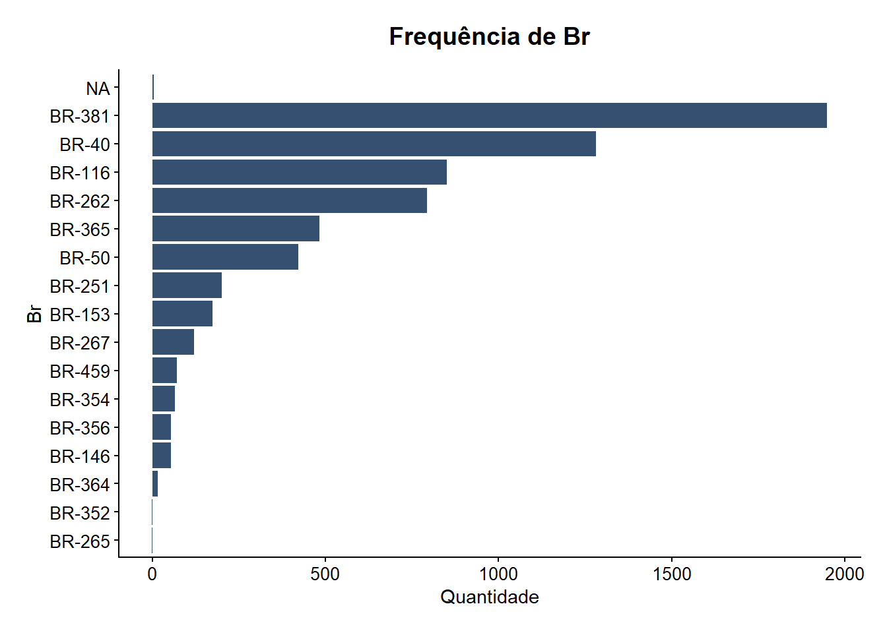
Para essa variável, foi utilizado um gráfico com os dez municípios com maior número de ocorrências de acidentes. Com base no gráfico, observa-se que o município com maior quantidade de acidentes é Betim, com 388 ocorrências. Em contraste, o município com menor incidência entre os dez apresentados é Teófilo Otoni, com 98 acidentes.
4.2 Análise bivariada
A análise bivariada teve como objetivo investigar relações entre duas variáveis, buscando identificar possíveis associações e padrões nos acidentes.
Foram realizados cruzamentos entre variáveis como tipo de acidente, condição meteorológica, tipo de pista e período do dia, utilizando gráficos comparativos para auxiliar na interpretação dos resultados.
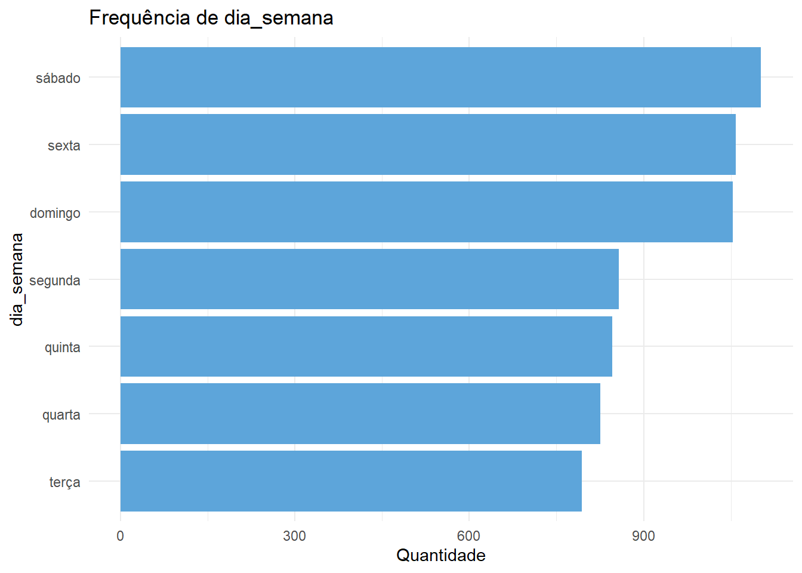
Ao analisar a relação entre tipo de pista e tipo de acidente, observa-se que nas pistas duplas os acidentes mais frequentes são saída de leito carroçável e colisão traseira. Já a colisão frontal apresenta baixa incidência nesse tipo de pista.
Nas pistas múltiplas, a quantidade total de acidentes é significativamente menor em comparação aos demais tipos de pista. Entretanto, dentre os acidentes registrados, a colisão traseira aparece como a ocorrência mais frequente.
Em relação às pistas simples, nota-se maior concentração de acidentes do tipo saída de leito carroçável. Em seguida, destacam-se colisão frontal, colisão transversal e tombamento, indicando maior variedade e frequência de acidentes nesse tipo de pista. Além disso, colisão lateral e colisão traseira apresentaram menor incidência em comparação às demais categorias.
De forma geral, percebe-se que as pistas simples concentram a maior quantidade de acidentes e apresentam maior diversidade nos tipos de ocorrência registrados.
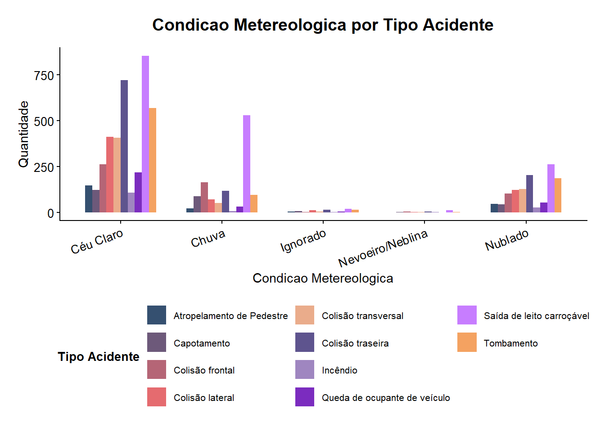
Ao analisar a relação entre condição meteorológica e tipo de acidente, observa-se que a maior parte dos acidentes ocorreu em situações de céu claro. Nessa condição, o acidente mais frequente é saída de leito carroçável, seguido por colisão traseira e tombamento. As demais categorias, como colisão lateral, colisão frontal e colisão transversal, apresentam incidências menores.
Em situações de chuva, destaca-se de forma significativa a ocorrência de saída de leito carroçável, apresentando frequência muito superior às demais categorias de acidentes. Em segundo lugar aparece a colisão frontal, porém com quantidade consideravelmente inferior.
Quando a condição meteorológica é de céu nublado, novamente a saída de leito carroçável representa a principal ocorrência. Em seguida aparecem colisão traseira e tombamento, com frequências próximas entre si. Já as demais categorias apresentam incidências mais baixas.
Por fim, em condições de nevoeiro ou neblina, observa-se quantidade bastante reduzida de acidentes registrados.
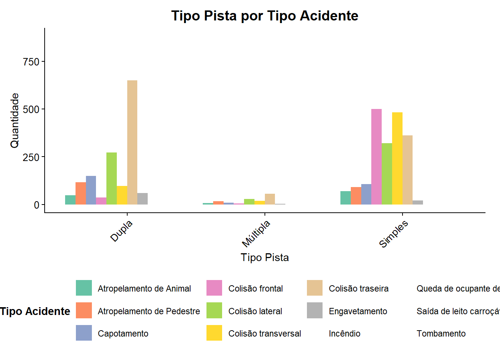
Ao analisar a relação entre período do dia e quantidade de mortes, observa-se que a mediana é igual a zero em todos os períodos, indicando que a maior parte dos acidentes não apresentou vítimas fatais.
Entretanto, os boxplots evidenciam a presença de valores extremos (outliers) em todos os períodos do dia, demonstrando que existem ocorrências menos frequentes com elevado número de mortes.
O período da madrugada apresentou o maior valor extremo observado, com aproximadamente 12 mortes em um único acidente, indicando maior gravidade em algumas ocorrências registradas nesse horário.
Além disso, o período da noite apresentou maior concentração de outliers em comparação aos demais períodos, com valores entre aproximadamente 7 e 10 mortes. Já os períodos da manhã e da tarde apresentaram distribuições semelhantes, com valores extremos mais baixos, próximos de cinco mortes.
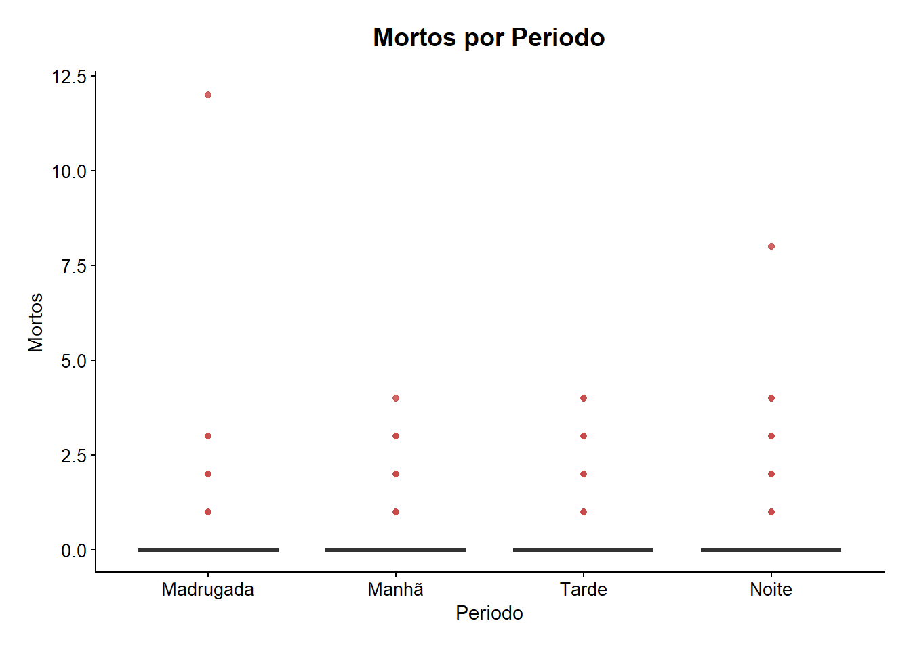
Ao analisar a relação entre tipo de pista e quantidade de mortes, observa-se que a mediana é igual a zero para todos os tipos de pista, indicando que a maior parte dos acidentes registrados não apresentou vítimas fatais.
Entretanto, os boxplots evidenciam a presença de valores extremos (outliers), representando acidentes com maior número de mortes. A pista simples foi o tipo de pista que apresentou os maiores valores extremos, além da maior quantidade de outliers, indicando maior ocorrência de acidentes graves nesse tipo de via. O maior valor observado foi de aproximadamente 12 mortes em um único acidente.
Já a pista dupla apresentou menor quantidade de outliers em comparação à pista simples, com valores máximos próximos de duas mortes. A pista múltipla foi a que apresentou menor quantidade de valores extremos, contendo apenas um outlier com valor relativamente baixo, entre uma e duas mortes.
De forma geral, percebe-se que os acidentes em pistas simples tendem a apresentar maior gravidade quando comparados aos demais tipos de pista.
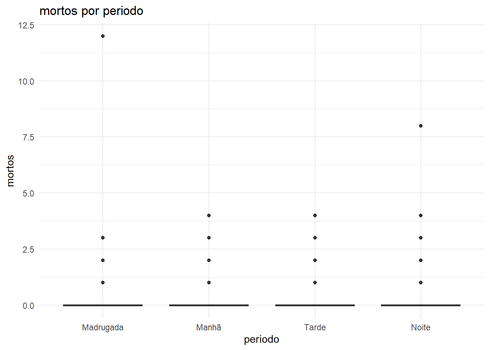
Ao analisar a distribuição de acidentes por BR, observa-se que a BR-381 apresenta, de forma disparada, a maior quantidade de ocorrências registradas no conjunto de dados. Esse resultado indica elevada concentração de acidentes nessa rodovia em comparação às demais.
Em seguida, destaca-se a BR-040 como a segunda rodovia com maior número de acidentes. Já as BRs 116 e 262 apresentam quantidades semelhantes de ocorrências, com valores próximos entre si.
De forma geral, percebe-se que a BR-381 concentra significativamente mais acidentes do que as outras rodovias analisadas, evidenciando sua relevância dentro do cenário de acidentes nas rodovias de Minas Gerais.
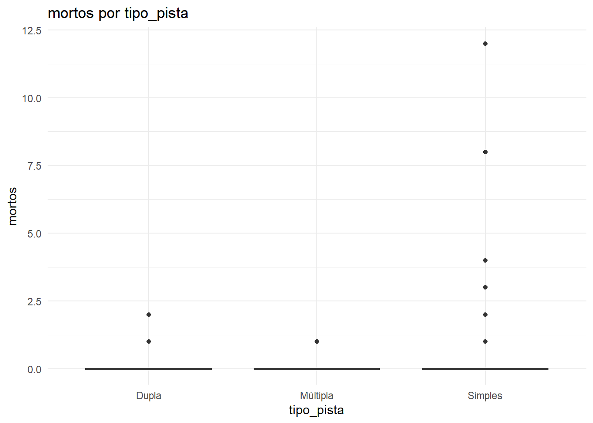
A análise bivariada entre periodo e tipo_acidente permite observar como os diferentes tipos de acidentes se distribuem ao longo dos períodos do dia. De forma geral, percebe-se que o tipo de acidente mais frequente em todos os períodos é a saída de leito carroçável, indicando que esse padrão se mantém independentemente do horário analisado.
Durante a madrugada, observa-se uma concentração mais acentuada de acidentes por saída de leito carroçável, representando mais de 25% dos acidentes registrados nesse período. Em seguida, destaca-se a colisão traseira. Já os acidentes menos frequentes durante a madrugada correspondem aos atropelamentos de animais.
No período da manhã, novamente predominam os acidentes por saída de leito carroçável, seguidos pelas colisões traseiras e pelos tombamentos. Esse comportamento indica certa continuidade do padrão observado na madrugada, embora com distribuição um pouco menos concentrada.
Durante a tarde, a saída de leito carroçável continua sendo o tipo de acidente mais incidente, seguida pelas colisões traseiras e colisões transversais. As demais categorias, como capotamento, colisão lateral e tombamento, apresentam frequências relativamente semelhantes, enquanto o atropelamento de animais permanece entre os menos frequentes.
No período da noite, observa-se uma distribuição mais equilibrada entre os tipos de acidentes. A saída de leito carroçável ainda aparece como a principal ocorrência, porém praticamente empatada com as colisões traseiras, indicando uma menor concentração em um único tipo de acidente quando comparado aos demais períodos do dia.
4.3 Análise temporal
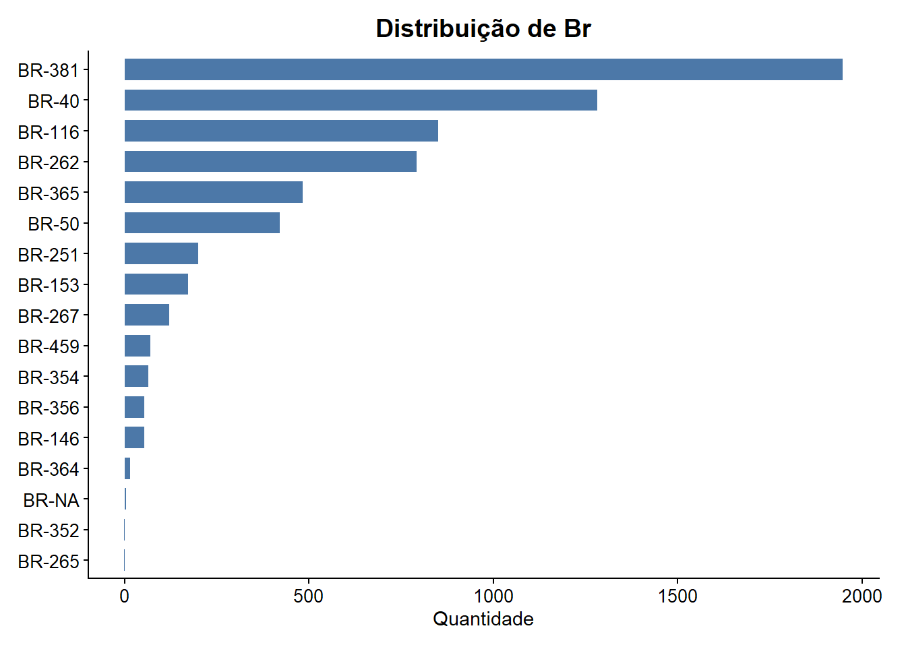
Ao analisar a distribuição temporal dos acidentes ao longo dos meses do ano, observa-se que o mês de dezembro apresenta a maior quantidade de ocorrências registradas, indicando um pico significativo no número de acidentes nesse período. Em seguida, destaca-se o mês de outubro como o segundo com maior incidência de acidentes. Os meses de setembro e janeiro também apresentam valores elevados e bastante próximos entre si.
Por outro lado, o mês de abril apresenta a menor quantidade de acidentes registrados, representando o ponto de menor incidência ao longo do ano.
Observando o comportamento temporal da série, percebe-se uma redução gradual no número de acidentes entre janeiro e abril, período em que é atingido o menor valor observado. A partir de maio ocorre uma elevação significativa nas ocorrências, seguida por certa estabilidade entre maio e junho.
Entre julho e agosto observa-se um novo aumento mais acentuado na quantidade de acidentes, enquanto entre agosto, setembro e outubro o crescimento continua de forma mais moderada. Já entre outubro e novembro ocorre uma queda significativa nas ocorrências, seguida por um novo aumento expressivo em dezembro, mês que concentra o maior número de acidentes registrados.
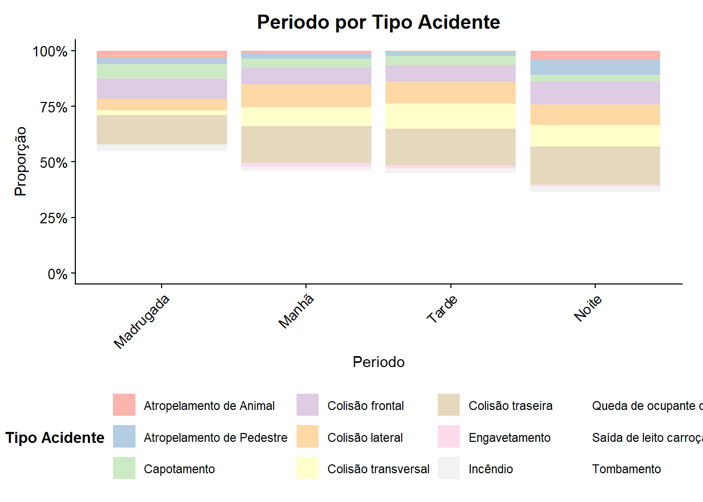
Ao analisar a distribuição de acidentes por dia da semana, observa-se que o sábado apresenta a maior quantidade de ocorrências registradas, sendo o dia com maior incidência de acidentes. Em seguida, destacam-se a sexta-feira e o domingo, que apresentam valores bastante próximos, embora a sexta-feira possua quantidade ligeiramente superior.
Dessa forma, percebe-se que os acidentes se concentram principalmente no período correspondente ao final de semana, especialmente entre sexta-feira, sábado e domingo.
Já nos demais dias da semana, segunda-feira, quinta-feira, quarta-feira e terça-feira apresentam quantidades relativamente semelhantes de acidentes, com menor variação entre si. Entre esses dias, a terça-feira corresponde ao menor número de ocorrências registradas.
De maneira geral, a ordem dos dias com maior incidência de acidentes, do mais frequente para o menos frequente, é: sábado, sexta-feira, domingo, segunda-feira, quinta-feira, quarta-feira e terça-feira.
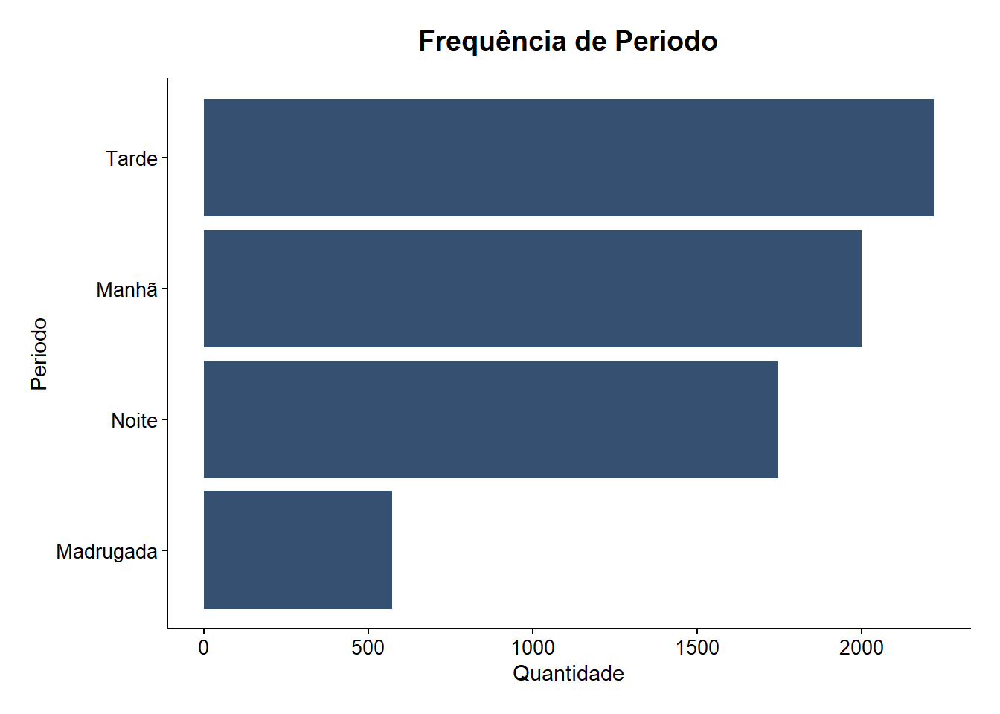
A maior incidência de acidentes ocorre no período da tarde, seguido pelo período da manhã. Em seguida, observa-se uma redução no período da noite, enquanto a madrugada apresenta a menor quantidade de registros.
Nota-se uma diferença bastante expressiva entre a tarde e a madrugada, evidenciando uma concentração de acidentes no período vespertino. A diferença entre tarde e manhã, embora existente, é menos acentuada. Já entre manhã e noite, a variação é moderada e semelhante à observada entre noite e madrugada. Em síntese, o período da tarde se destaca como o de maior ocorrência de acidentes, enquanto a madrugada apresenta os menores índices.